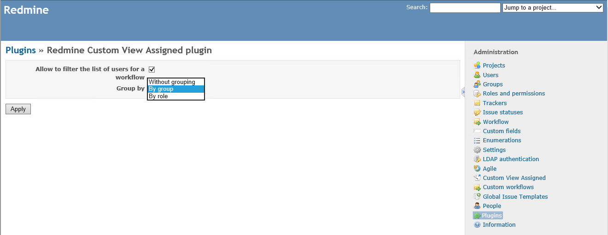
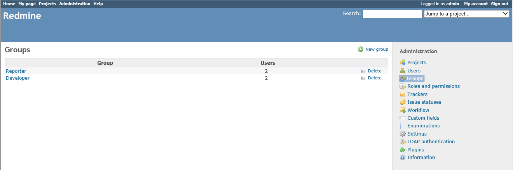
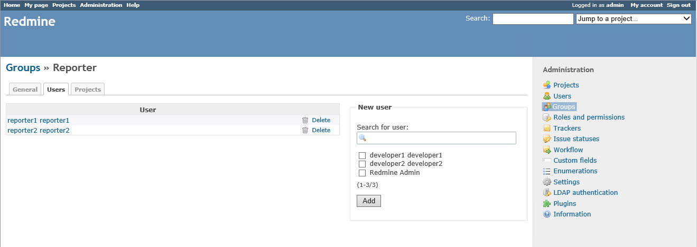

Description
This plugin for Redmine adds a custom view of the field assigned.
Screenshots
Settings: 
List of Users:

List of Groups: 
Developer Group:

Reporter Group: 
The status transitions for Manager:

The status transitions for Developer:

The status transitions for Reporter:

View assignee on a New status:

View assignee on a In Progress status:

View assignee on a Feedback status:

Changelog
v1.0.1
- Fixed bug with presetting mode group.
v1.0.0
- Added possibility to configure the plugin.
- Grouping users by roles, groups or groups without.
- Added a filter to the list of users for a workflow.
- Added German, Spanish, French, Italian, Portuguese translations.